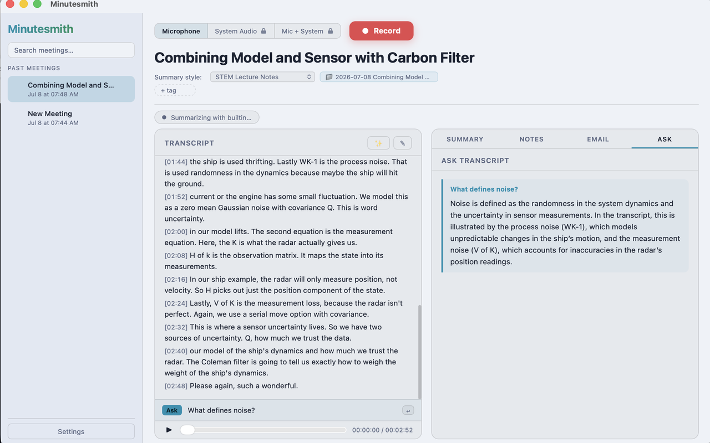
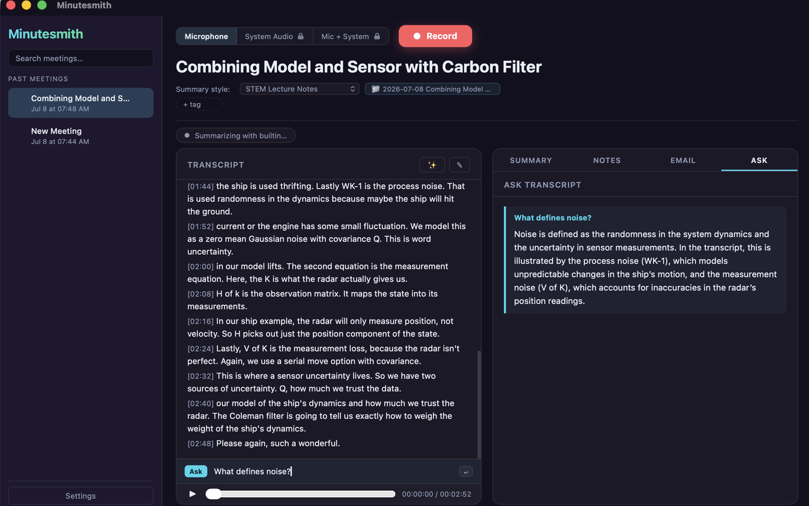
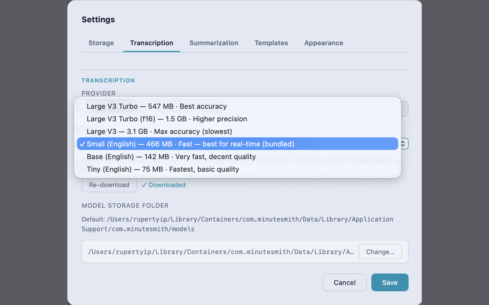
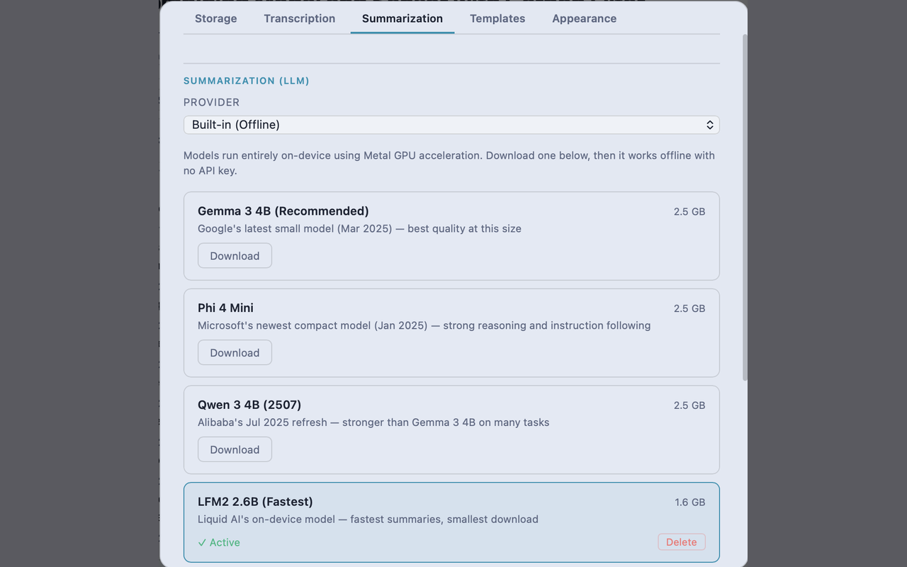

Meeting notes that
never leave your Mac.
Minutesmith records, transcribes, and summarizes your meetings and lectures right on your laptop. No account, no cloud, no mystery server quietly keeping a copy — because we don't have one.
macOS 12+ · Apple silicon

[00:00] The pitch
Your meetings are nobody's business. Ours included.
Every other app quietly ships your words off to some server and asks you to trust the privacy policy nobody reads. Minutesmith skips that whole arrangement — there's no server to send anything to. Privacy isn't a toggle here; it's just how the thing is built.
On-device by default
Recording, transcription, summaries — all of it runs on your laptop. Your audio doesn't take a little trip to the cloud and back.
Accounts & servers
No sign-up, no "verify your email," no password to forget. Download a local model once, and after that it's just open the app and hit record.
Analytics or tracking
No usage stats, no crash SDKs, no ad networks taking notes on you. Nothing ever gets phoned home.
[ ▸ ] How it works
From raw audio to finished minutes — all on your machine.
Four steps, played back like the meeting itself. Not one of them needs Wi-Fi.
[00:00] Record
Captured locally, never streamed.
Hit record — or smash ⌘⇧R from anywhere — and Minutesmith grabs your mic plus the system audio from Zoom, Teams, or Meet. You get everyone on the call, not just your half of it, written straight to your own disk instead of streamed off to who-knows-where.
Looks good in light or dark, and stays out of your way so you can actually focus on the meeting.

[00:20] Transcribe
Transcribed on your Mac, even offline.
A local Whisper model turns speech into a clean, timestamped transcript using your Mac's own GPU. Download it once and you can go full airplane-mode — transcription keeps humming along, no API key, nothing uploaded.

[00:45] Summarize
Summarized without the cloud.
Standup, sales call, lecture notes, or general — pick a template and the summary shapes itself to whatever you just sat through, whether that's a client call or a 9am lecture. It runs on a local model by default. Want a specific cloud model instead? Totally your call: bring your own key and the text goes straight from your Mac to that provider, never through us.

[01:10] Ask
Don't rewatch. Just ask.
Forgot what got decided around minute 34 — or what the professor said would be on the exam? Ask in plain English and get an answer pulled straight from what was actually said, transcript sitting right next to it so you can check the receipts.
Every meeting lives in a searchable library of plain files on your Mac. Export them, delete them, back them up — they're yours, not stranded on a server you'd have to email support to escape.
[ ✦ ] Who it's for
For anyone drowning in things they'll need to remember.
If you have to sit through it, Minutesmith can capture it — and keep it to yourself.
Students
Record the lecture, get a clean transcript and study-ready notes, then ask it what the professor said about that thing that's definitely on the exam. No edtech account, no upload — your recordings never leave your laptop.
Freelancers & consultants
Turn client calls into summaries and follow-ups without shipping confidential conversations off to a third party you never actually vetted.
Anyone on too many calls
Standups, 1:1s, interviews — capture what got decided so you can stop frantically typing and actually listen for once.
[01:30] Your data
What's said in the room stays on your machine.
Recordings, transcripts, and summaries live as plain files in your own app-data folder — never uploaded to a server we run, because (say it with us) we don't run one. Nothing's tied to an account, nothing's watching what you record. The only way anything leaves your Mac is if you flip on a cloud provider yourself, and even then it goes straight from your device to them with your key. We're never the middleman.
[ ⏹ ] Stop recording
Keep your next meeting to yourself.
Download Minutesmith and turn your calls into clean notes — without handing a single word to anyone else.
Launch pricing — 50% off through Oct 31, 2026.